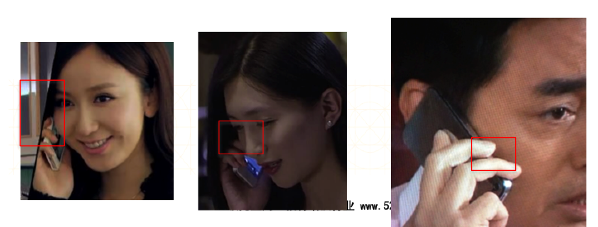
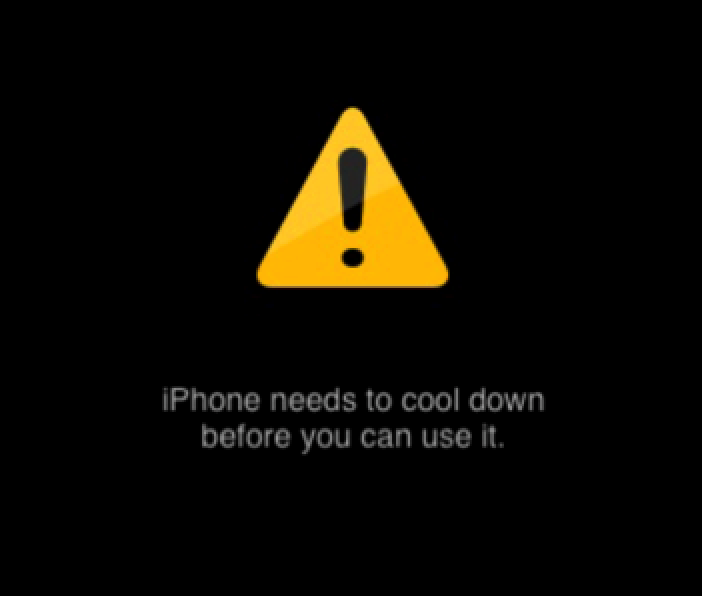
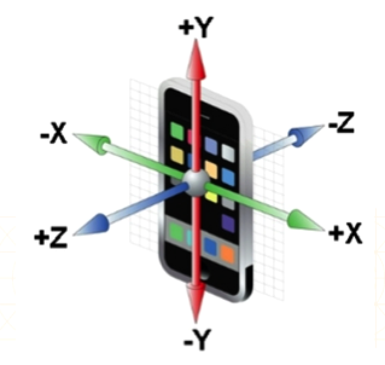

环境光传感器（Ambient Light Sensor）
- 是iOS、Mac设备中最为古老的传感器成员
- 它能够让你在使用 Mac、iPhone、iPad时，眼睛更为舒适
- 应用场景:
- 从一个明亮的室外走入相对黑暗的室内后，iOS设备会自动调低亮度，让屏幕显得不再那么光亮刺眼
- 当你使用iPhone拍照时，闪光灯会在一定条件下自动开启
- 几乎所有的Mac 都带有背光键盘，当周围光线弱到一定条件时，会自动开启键盘背光
距离传感器（Proximity Sensor）
- 用于检测是否有其他物体靠近设备屏幕
- 应用场景:
- 当你打电话或接电话时将电话屏幕贴近耳边，iPhone屏幕会变暗
- 节省电量
- 防止耳朵或面部不小心触摸屏幕而引发一些不想要的意外操作
- 题外话：利用距离传感器，能找出很多电视剧的穿帮镜头
磁力计传感器（Magnetometer Sensor）
- 可以感应地球磁场,获得方向信息
- 可以用于电子罗盘和导航应用
内部温度传感器（Internal Temperature Sensor）
- 从 iPad一代开始，iOS设备都加入了一个内部温度传感器，用于检测内部组件温度，当温度超过系统设定的阈值时,会出现以下提示
- 内部温度传感器，对于提升iOS设备自身安全性与稳定性有很大的帮助

湿度传感器（Moisture Sensor）
- 湿度传感器跟其他基于微电子的传感器不同，是一个简单的物理传感器
- 简单来说，湿度传感器就是一张遇水变红的试纸
- Apple的维修人员就是通过检测试纸是否变红，来判断设备是否进水 （设备进水不在保修范围之内）
陀螺仪（Gyroscope）
- 陀螺仪是随着iPhone4的上市首次出现在iOS设备上的传感器
- 陀螺仪的原理是检测设备在X、Y、Z轴上所旋转的角速度
- 应用场景:主要在游戏中
- 模拟汽车驾驶时方向盘旋转的动作
- 使得这类游戏的操控体验更为真实
- 陀螺仪的方向:
加速计传感器（Motion/Accelerometer Sensor）
- 最早出现在iOS设备上的传感器之一
- 加速计用于检测设备在X、Y、Z轴上的加速度 （哪个方向有力的作用）
- 加速计的应用场景: